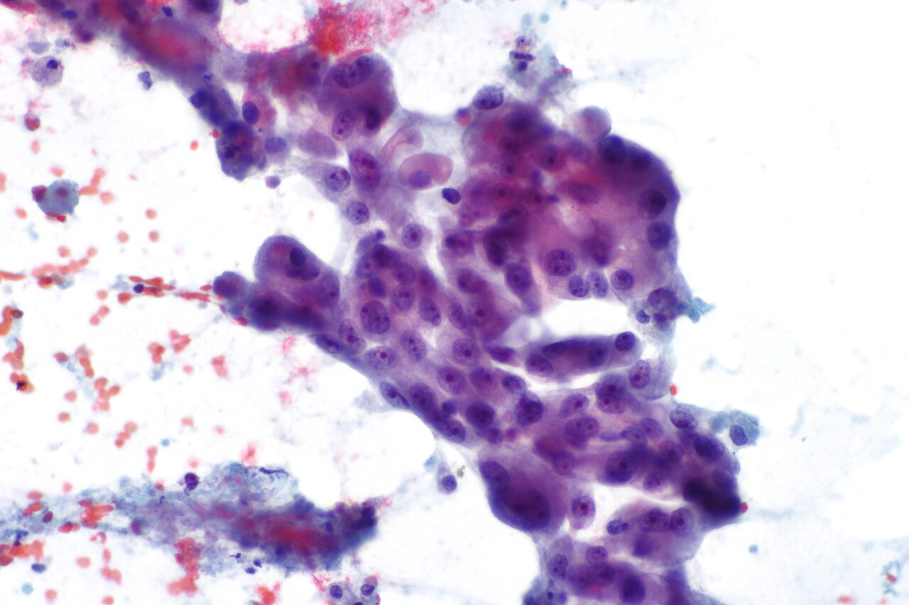

About Shi Lab
Single-cell technology development, cancer biology, and clinically motivated liquid biopsy research.
About
Connecting cellular evidence with precision medicine
Shi Lab develops single-cell analytical technologies to investigate rare tumor cells and advance liquid biopsy research. We combine cell-based assays, single-cell sequencing, and computational analysis to identify malignant cells in body-fluid specimens and characterize their molecular and functional properties.
Our research connects molecular evidence with cellular morphology. By using sequencing to establish cancer-cell identity, we build annotated image datasets and develop AI approaches for cytopathologic diagnosis. Complementary studies examine tumor heterogeneity, clonal relationships, lineage plasticity, and the spatial organization of the tumor microenvironment.
Building on microchip-based assays and single-cell functional profiling, we also investigate how tumor-cell metabolic states relate to treatment response and clinical outcomes. Together, these efforts connect technology development, cancer biology, and diagnostic research.

Our work
Explore our research
Our research combines rare-cell analysis, sequencing-guided cytopathology, tumor biology, and single-cell functional profiling. Explore the research page for the questions and methods behind each direction.
Research directions and methodsResources
Explore our work
CTC Atlas brings together sequencing datasets and cancer-cell images from body-fluid specimens. Published studies and preprints are collected on our publications page.